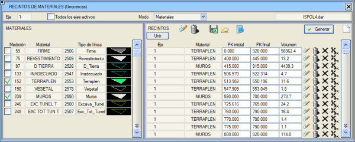
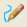
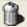
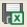
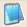
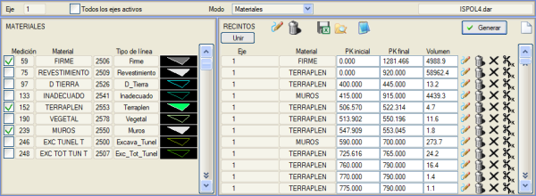
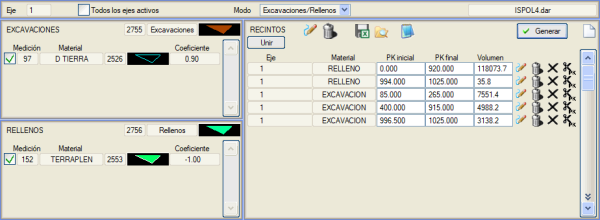

Malzeme alanları aracı, belirli bir eksen (veya projenin tüm eksenleri) için metraj tablosuna göre bir metrajı olan malzemeleri arar, tanımlar ve listeler oluşturur.

Genel Kullanım
Temel kullanım yöntemi basittir: Pencerenin sol tarafında çalışmak istediğimiz malzemeler seçilir ve listenin oluşturulması için sağ taraftaki Oluştur düğmesine basılır.
Pencerenin sol tarafındaki malzeme listesi şu sütunları sunar:
- Seçim kutusu:
Burada seçilen malzemeler, pencerenin sağ tarafındaki alanlar listesine dahil edilecektir.
- Metraj No: Metraj tablosuna göre metraj numarası.
- Malzeme: Metraj tablosundaki metraj kaleminin adı.
- Çizgi Tipi:
üç sütunda çizgi numarasını, adını ve o metrajın planda, .per enkesit dosyalarında vb. çizildiği grafiksel gösterimi gösterir.
Bu arada, pencerenin sağ tarafındaki alanlar listesi şu sütunları sunar:
- Eksen: burada listelenen malzemenin ait olduğu eksen.
- Malzeme: metraj kaleminin adı.
- Başlangıç/Bitiş KM:
alanın başladığı/bittiği KM.
- Hacim: Malzemenin Hacmi.
Alanlar listesinin KM veya hacim gibi bazı alanları, kullanıcı tarafından kendi sorumluluğunda düzenlenebilir. Bunun programın işleyişi üzerinde bir etkisi yoktur, ancak herhangi bir ince ayar veya düzeltme yapmak istersek .res/.xls listelerinde sunulan sonuçları değiştirmemizi sağlar.
Bu araç ayrıca aşağıdaki özelliklere sahiptir:
- Oluştur: malzeme listesinde seçilen malzemelerden alanlar listesini oluşturur.
- Birleştir: bir alanı diğerine grafiksel olarak seçerek birleştirir, böylece araç KM'lerini, hacmini ve yeni ağırlık merkezini yeniden hesaplar. Alanlar aynı malzemeden olmalıdır, ancak farklı eksenlere ait olabilirler.
-  bu alanı (veya tüm alanları) metraj tablosunda belirtilen çizgi tipini kullanarak planda çizer.
-  bu alanın (veya tüm alanların) plandaki çizimini siler.
-  alanlar listesini .xls formatında oluşturur.
 .\res listeler klasörünü açar. .\res listeler klasörünü açar.
-  alanlar listesini .res formatında oluşturur.
- alanı listeden siler.
- alanı belirli bir KM'den ikiye böler.
- sıfırdan yeni bir liste oluşturmak için alanlar listesini boşaltır.
Liste Modları
Varsayılan liste modu Malzemeler'dir. Bu mod etkinken, "malzeme" olarak metraj tablosundaki herhangi bir girdiyi anlayarak, projede kullanılan tüm malzemelerle bir liste oluşturulur.
Alanlar listesi oluşturulduğunda, her bir malzemenin her bir kullanımı için bir girdi oluşturulur ve .xls veya .res formatında liste oluşturulduğunda bize Istram içindeki bu listenin verilerini (eksen, metraj no, başlangıç/bitiş KM, hacim, 2D alan) ve ayrıca ağırlık merkezinin XYZ koordinatlarını sunar. İletişim kutusunun Hacim kutucukları üzerinden imleç geçirildiğinde, 2D Alan da gösterilir.

Pencerenin üst kısmında bulunan seçici aracılığıyla, liste modunu Kazılar/Dolgular olarak değiştirebiliriz. Bunu yaptığımızda, liste ikiye bölünür:
- Kazılar: kütleler diyagramı için pozitif bir Dönüşüm Faktörüne sahip tüm metraj kalemleri: toprak kazısı, kaya kazısı...
- Dolgular: kütleler diyagramı için negatif bir Dönüşüm Faktörüne sahip tüm metraj kalemleri: dolgu, seçme malzeme...
Alanlar listesi oluşturulduğunda, kazıları kazılarla ve dolguları dolgularla gruplandırır. Hacimleri, onu oluşturan malzemelerin dönüşüm faktörüne göre hesaplar.
.xls veya .res formatında liste oluşturulduğunda bize Istram içindeki bu listenin verilerini (eksen, kazı/dolgu, başlangıç/bitiş KM, hacim) ve ayrıca ağırlık merkezinin XYZ koordinatlarını ve her bir malzemenin hesaplanan hacme olan katkısını sunar.

|